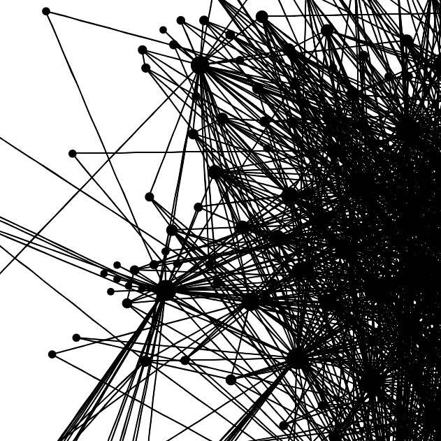
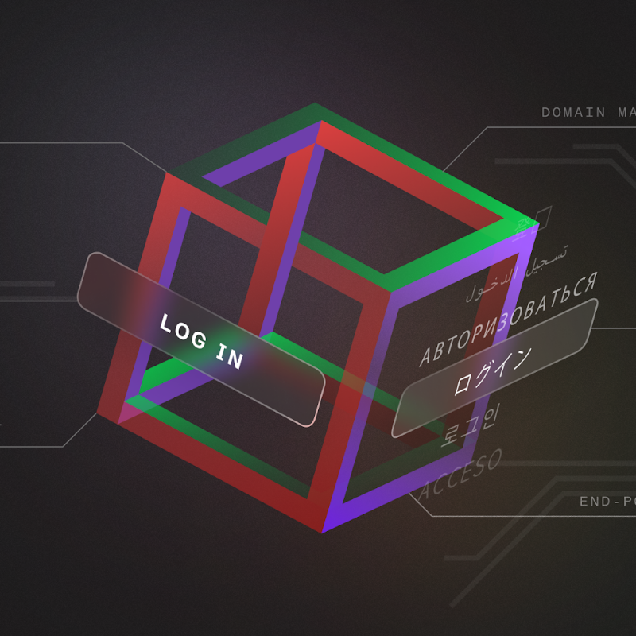

Systems
Systems are not defined by components, but by constraints and execution. Each system exposed here operates under measurable limits and observable behavior.
A traversal layer through code, experiments, and active system fragments.
Artifacts exposed here are not uniformly stable. Some are validated, some are provisional, and some remain intentionally visible in unfinished form.
This is not a presentation. It is a live surface of systems in motion.
Repositories, manuscripts, and engineered outputs. Each artifact represents a state: stable, experimental, or transitional.
Nothing here is positioned as final by default. Artifacts persist only if they survive execution, evaluation, and reuse.
Visibility does not imply completeness. It implies traceability.
Phasellus convallis. Duis , sed ultricies.
Phasellus et pulvinar. Duis, sed erat dapibus.
Phasellus elit id ullam amet et Duis turpis , sed erat
Phasellus elit id corper pulvinar. Duis turpis , sed dapibus.

Systems are not defined by components, but by constraints and execution. Each system exposed here operates under measurable limits and observable behavior.
Runtime behavior under real conditions: latency, drift, adversarial input, and failure. Systems are evaluated through operation, not description.

Measurement defines validity. Outputs are assessed for stability, reproducibility,and alignment with system constraints.
This layer defines how systems are accessed, executed, and observed. It connects repositories, deployment surfaces, and operational environments.
Code does not exist in isolation. It exists in execution contexts: cloud, local systems, constrained environments, and controlled interfaces.
Where code lives is less important than how it behaves under load and constraint.
Phasellus convallis elit id ullam corper amet et pulvinar. Duis aliquam turpis mauris, sed ultricies erat dapibus.
Phasellus convallis elit id ullam corper amet et pulvinar. Duis aliquam turpis mauris, sed ultricies erat dapibus.
Phasellus convallis elit id ullam corper amet et pulvinar. Duis aliquam turpis mauris, sed ultricies erat dapibus.
Phasellus convallis elit id ullam corper amet et pulvinar. Duis aliquam turpis mauris, sed ultricies erat dapibus.
This is not an open channel.
Signal is defined by clarity of problem, presence of constraints, and alignment with system-level work.
Valid signals include:
— architecture under real constraints
— model evaluation or failure analysis
— alignment with active systems or artifacts.
Undefined requests, exploratory conversations, and generic inquiries are not processed.
Signal must precede access.